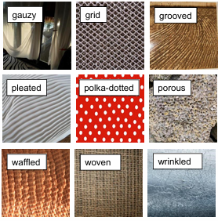
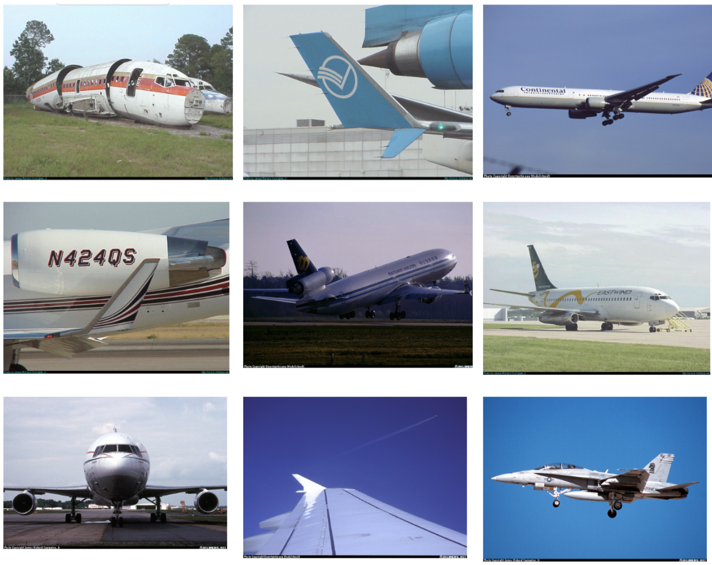
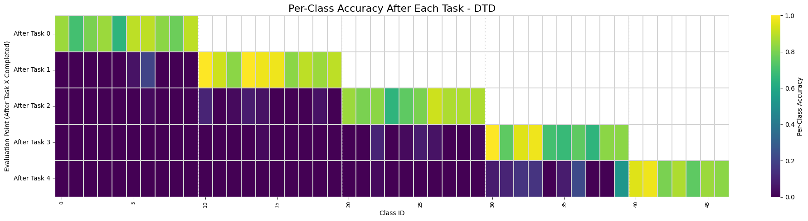
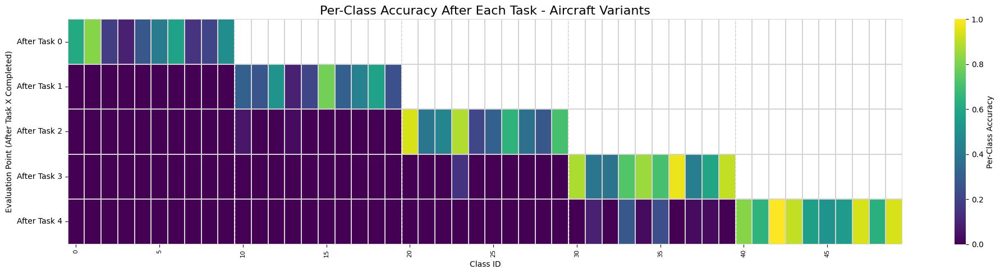
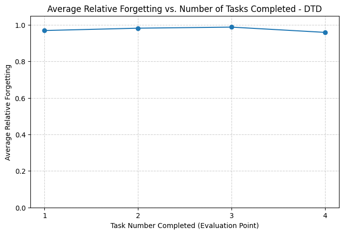
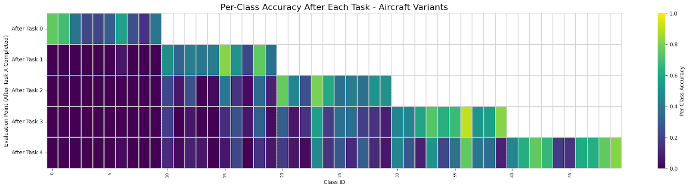
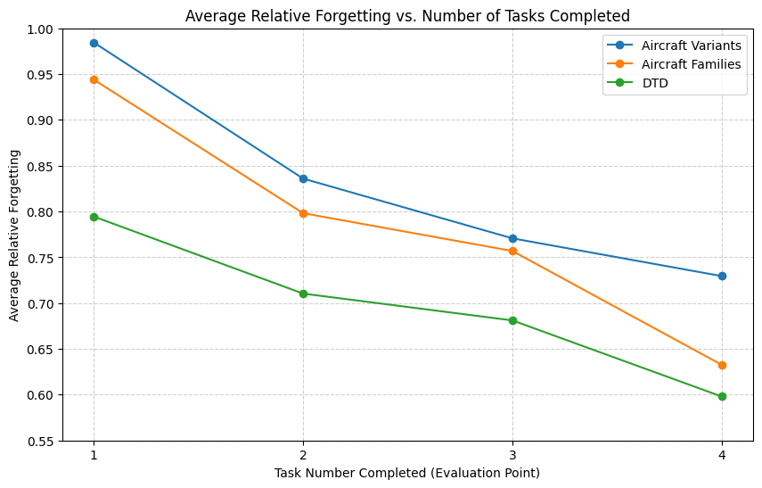
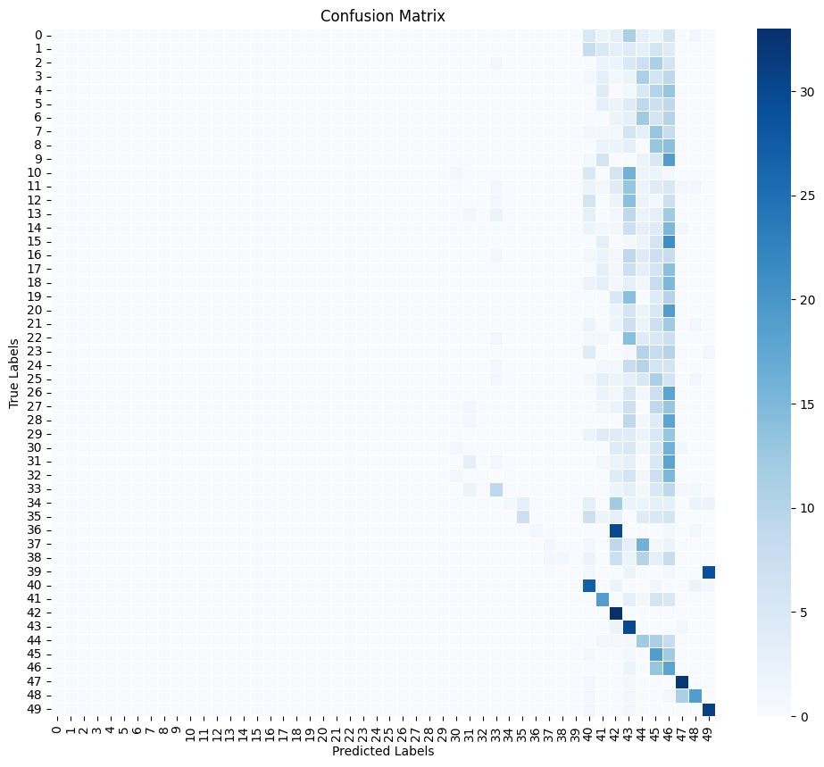
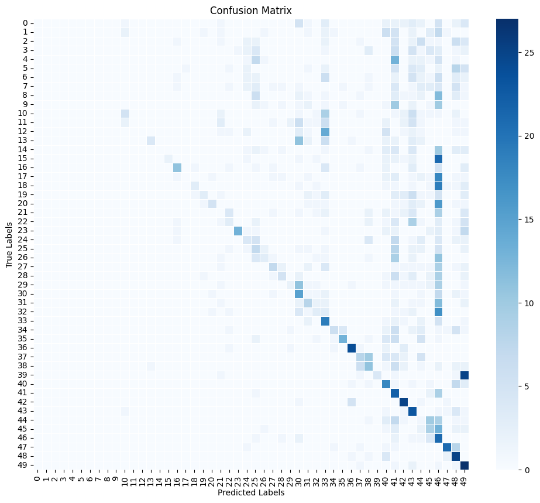
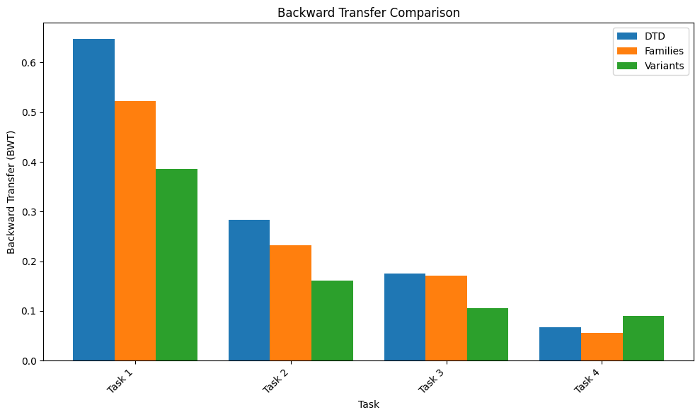

Sample Images for DTD and FGVC Aircraft Dataset
Sample Images for DTD
This image contains some sample images from DTD, including the class label for each image.
As one can see, the images are quite visually distinct, thus making it a good candidate for our coarse-grained dataset.
Sample Images for FGVC Aircraft Dataset
This image contains some sample images from the FGVC Aircraft datset.
The images chosen for this sample are not proportionally representative of the images within the FGVC Aircraft dataset,
but rather, these images were chosen to show the vast variety in perspective, aircraft, and backgrounds present in the images.
However, most of the images are similar to the image in the rightmost column, middle row, containing a full-body side profile of
the aircraft. Additionally, with most commercial aircraft being visually similar, the FGVC Aircraft dataset is a good candidate for our fine-grained dataset.
Results
Naive Approach
Accuracies
Per Class Accuracy after Each Task for Naive DTD
The above image contains the per-class classification accuracies after each task on DTD, with a brighter color indicating
a higher accuracy. As one can see, there is a "staircase" effect, where after each task, the accuracy of the classes in the previous
tasks are near zero, whereas the accuracy of the classes in the current task are noticably higher. This is a clear indication of
catastrophic forgetting on DTD without any mitigation techniques.
Per Class Accuracy after Each Task for Naive FGVC Aircraft Variants
The above image contains the per-class classification accuracies after each task on the FGVC Aircraft dataset at the variant level
(most granular). Similar to DTD, the FGVC Aircraft dataset also has a "staircase" effect, where the accuracy of the classes in the previous tasks are near zero,
whereas the accuracy of the classes in the current task are noticably higher. Again, this is a clear indication of catastrophic forgetting on FGVC Aircraft without any mitigation techniques.
Forgetting
Average Relative Forgetting for Naive DTD
As reflected in the accuracy plots, the average relative forgetting on DTD without mitigation techniques is nearly 100% after each task.
The model significantly underperforms on previous tasks, when compared to the maximum accuracy achieved on that task, leading to a very high relative forgetting
measure.
Average Relative Forgetting for Naive FGVC Aircraft Variant

Similar to DTD, the naive approach on FGVC Aircraft also has nearly a 100% forgetting rate after each task. Thus, we can see that without proper
mitigation techniques, whether the dataset is coarse-grained or fine-grained, the model will suffer from catastrophic forgetting.
Replay
Accuracies
Per Class Accuracy after Each Task for DTD with Replay

The above heatmap shows the per-class accuracies after each task on DTD, with replay as a catastrophic forgetting mitigation technique.
As one can see, the "staircase" effect is still present, but the accuracies of classes in previous tasks is slightly higher compared to the naive approach, especially
for the model remembering classes from task 3 after training on task 4. However, the model still suffers from catastrophic forgetting, with not much noticeable improvement.
Per Class Accuracy after Each Task for FGVC Aircraft Families with Replay

The above heatmap shows the per-class accuracies after each task on the FGVC Aircraft dataset at the family level (more coarse grained than the variant level).
A similar pattern can be seen as with DTD, where the "staircase" effect is still present, but the accuracies of classes in previous tasks is slightly higher compared to the naive approach.
Again, the model remembers classes from task 3 after training on task 4, but the model still suffers from catastrophic forgetting. One interesting observation to note is that as the tasks progress,
the model in-task performance of the model improves.
Per Class Accuracy after Each Task for FGVC Aircraft Variants with Replay

The above heatmap shows the per-class accuracies after each task on the FGVC Aircraft dataset at the variant level (most fine-grained). Despite seeing improvements when increasing in granularity between
DTD and FGVC Aircraft Families, the model performs worse at the variant level. However, the model still performs better than the naive approach, with the same pattern of task 3 classes being remembered the most after
training on task 4. There is still a noticeable "staircase" effect, suggesting that just replay is not enough to mitigate catastrophic forgetting.
Average Relative Forgetting with Replay for each Granularity

When comparing the relative forgetting for the three different levels of granularity with replay. One can see that for DTD, adding replay is initially able to reduce forgetting, but forgetting actually gets worse as
more tasks are added. However, for both FGVC Aircraft Families and Variants, the model consistently forgets less as more tasks are added, with Aircraft Families
outperforming DTD by the final task. This suggests that replay mitigates catastrophic forgetting better for fine-grained datasets.
EWC and Replay
Per Class Accuracy after Each Task for DTD with EWC and Replay

The above heatmap displays the per-class accuracies after training on each task on DTD with both Elastic Weight Consolidation (EWC) and replay as mitigation techniques. When
compared to both the naive approach and replay, the model performs signficntly better, with the accuracies of classes in previous tasks being better across all tasks. Additionally,
the accuracies of classes in previous tasks does not fluctuate even when adding new tasks, suggesting that EWC and replay are much more effective than replay alone.
Per Class Accuracy after Each Task for FGVC Aircraft Families with EWC and Replay

The above heatmap displays the per-class accuracies after training on each task on the FGVC Aircraft dataset at the family level, with both EWC and replay as mitigation techniques.
Again, similar to DTD, the model performs significantly better than both the naive approach and replay, with the accuracies of classes in previous tasks being better across all tasks. However, the overall
accuracies are lower than DTD, which can potentially be attributed to having lower in-task accuracies (will be discussed further in the relative forgetting plot).
Per Class Accuracy after Each Task for FGVC Aircraft Variants with EWC and Replay
The above heatmap displays the per-class accuracies after training on each task on the FGVC Aircraft dataset at the variant level, with both EWC and replay as mitigation techniques.
The overall accuracies are lower than both DTD and FGVC Aircraft Families, but still performs better than just replay and the naive approach. These lower accuracies can be attributed to
harder classification tasks, as the model is trying to classify between very similar classes. This will also be discussed further below in the relative forgetting plot.
Average Relative Forgetting with Replay and EWC for each Granularity
When comparing the relative forgetting across the three levels of granularity for EWC and replay, it is clear the DTD has the lowest overall forgetting. However, both Aircraft Families and
Aircraft Variants have a higher drop in relative forgetting across tasks, with Aircraft Families seeing the greatest reduction in forgetting. This suggests that with EWC and replay, the preservation of features allows the model
to use old information to help predict new classes within fine-grained datsets. The more visually distinct classes in DTD may not benefit as much from this, as the model must learn more features in new classes.
Confusion Matrices (Pay Attention to Scale!)
Naive Approach
Confusion Matrix for DTD Naive Approach

Above is the confusion matrix for DTD with no catastrophic forgetting mitigation techniques. As expected, the classes from the final task are predicted with high accuracy, whereas the remainder of the classes from
previous tasks are classified as one of the classes from the final task. This is a clear indication of catastrophic forgetting, as the model is unable to remember any of the classes from previous tasks.
Confusion Matrix for FGVC Aircraft Variants Naive Approach
Above is the confusion matrix for FGVC Aircraft Variants with no catastrophic forgetting mitigation techniques. The results are the same as the naive approach for DTD, with a strong bias towards
classes in the final task, thus also indicating catastrophic forgetting.
Replay
Confusion Matrix for DTD with Replay

Above is the confusion matrix for DTD with replay. Compared to the naive approach, one can see that the diagonal (i.e. number of correctly predicted classes) is longer and contains darker colors. Thus, we can see that replay
has some mitigations against catastrophic forgetting. However, the confusion matrix still shows that most classes are misclassified as the final task classes, indicating that a bias towards the final task is still present.
Confusion Matrix for FGVC Aircraft Families with Replay

Above is the confusion matrix for FGVC Aircraft Families with replay. Again, compared to the naive approach, there is improvement as the diagonal trails longer. One important thing to note is the scale, as the colors are lighter
in this plot compared to other plots. This is due to the fact that class 15 (Boeing 727) is being strongly misclassified as class 40 (EMB-120). To the human eye, these classes look fairly visually distinct,
but it is possible that these misclassifications are due to both aircraft being
Confusion Matrix for FGVC Aircraft Variants with Replay

Caption for replay_forget.png
Confusion Matrix for DTD with EWC and Replay

Caption for replay_forget.png
Confusion Matrix for FGVC Aircraft Families with EWC and Replay

Caption for replay_forget.png
Confusion Matrix for FGVC Aircraft Variants with EWC and Replay
Caption for replay_forget.png
Backward Transfer
Backward Transfer for Naive

Caption for replay_forget.png
Backward Transfer for Replay

Caption for replay_forget.png
Backward Transfer for EWC and Replay
Caption for replay_forget.png